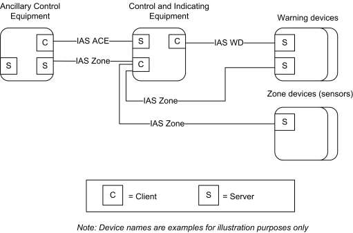

CHAPTER 8 SECURITY AND SAFETY ¶
The Cluster Library is made of individual chapters such as this one. See Document Control in the Cluster Library for a list of all chapters and documents. References between chapters are made using a X.Y notation where X is the chapter and Y is the sub-section within that chapter. References to external documents are contained in Chapter 1 and are made using [Rn] notation.
8.1 General Description ¶
8.1.1 Introduction ¶
The clusters specified in this document are for use in security and safety related applications.
The clusters currently defined are those that are used by wireless Intruder Alarm Systems (IAS). Intruder Alarm systems include functions for the detection of intruders and/or triggering, processing of information, notification of alarms and the means to operate the IAS.
Functions additional to those MAY be included in IAS providing they do not influence the correct operation of the mandatory functions. Components of other applications MAY be combined or integrated with a IAS, providing the performance of the IAS components is not adversely influenced.
8.1.2 Cluster List ¶
This section lists the clusters specified in this document, and gives examples of typical usage for the purpose of clarification.
The clusters defined in this document are listed in Table 8-1.
Table 8-1. Clusters of the Security and Safety Functional Domain ¶
| Cluster ID | Cluster Name | Description |
|---|---|---|
| 0x500 | IAS Zone | Attributes and commands for IAS security zone devices. |
| 0x501 | IAS ACE | Attributes and commands for IAS Ancillary Control Equipment. |
| 0x502 | IAS WD | Attributes and commands for IAS Warning Devices |
Figure 8-1. Typical Usage of the IAS Clusters ¶

8.2 IAS Zone ¶
8.2.1 Overview ¶
Please see Chapter 2 for a general cluster overview defining cluster architecture, revision, classification, identification, etc.
The IAS Zone cluster defines an interface to the functionality of an IAS security zone device. IAS Zone supports up to two alarm types per zone, low battery reports and supervision of the IAS network.
8.2.1.1 Revision History ¶
The global ClusterRevision attribute value SHALL be the highest revision number in the table below.
| Rev | Description |
|---|---|
| 1 | mandatory global ClusterRevision attribute added; ZHA 1.2 and 1.2.1 features; CCB 2044 2045 |
| 2 | CCB 2352 |
8.2.1.2 Classification ¶
| Hierarchy | Role | PICS Code | Primary Transaction |
|---|
| Base | Application | IASZ | Type 2 (server to client) |
|---|
8.2.1.3 Cluster Identifiers ¶
| Identifier | Name |
|---|---|
| 0x0500 | IAS Zone |
8.2.2 Server ¶
8.2.2.1 Attributes ¶
For convenience, the attributes defined in this specification are arranged into sets of related attributes; each set can contain up to 16 attributes. Attribute identifiers are encoded such that the most significant three nibbles specify the attribute set and the least significant nibble specifies the attribute within the set. The currently defined attribute sets are listed in Table 8-2.
Table 8-2. Attribute Sets for the IAS Zone Cluster ¶
| Attribute Set Identifier | Description |
|---|---|
| 0x000 | Zone information |
| 0x001 | Zone settings |
8.2.2.1.1 Zone Information Attribute Set ¶
The Zone Information attribute set contains the attributes summarized in Table 8-3.
Table 8-3. Attributes of the Zone Information Attribute Set ¶
| Id | Name | Type | Range | Access | Default | M/O |
|---|---|---|---|---|---|---|
| 0x0000 | ZoneState | enum8 | All | R | 0x00 | M |
| 0x0001 | ZoneType | enum16 | All | R | - | M |
| 0x0002 | ZoneStatus | map16 | All | R | 0x00 | M |
8.2.2.1.1.1 ZoneState Attribute ¶
The ZoneState attribute contains the values summarized in Table 8-4.
Table 8-4. Values of the ZoneState Attribute ¶
| Attribute Value | Meaning |
|---|---|
| 0x00 | Not enrolled |
| Attribute Value | Meaning |
|---|---|
| 0x01 | Enrolled (the client will react to Zone State Change Notification commands from the server) |
8.2.2.1.1.2 ZoneType Attribute ¶
The ZoneType attribute values are summarized in Table 8-5. The Zone Type dictates the meaning of Alarm1 and Alarm2 bits of the ZoneStatus attribute, as also indicated in this table.
Table 8-5. Values of the ZoneType Attribute ¶
| Value | Zone Type | Alarm1 | Alarm2 |
|---|---|---|---|
| 0x0000 | Standard CIE | System Alarm | - |
| 0x000d | Motion sensor | Intrusion indication | Presence indication |
| 0x0015 | Contact switch | 1st portal Open-Close | 2nd portal Open-Close |
| 0x0016 | Door/Window handle | See Table 8-7 | See Table 8-7 |
| 0x0028 | Fire sensor | Fire indication | - |
| 0x002a | Water sensor | Water overflow indica- tion | - |
| 0x002b | Carbon Monoxide (CO) sensor | CO indication | Cooking indication |
| 0x002c | Personal emergency device | Fall/Concussion | Emergency button |
| 0x002d | Vibration/Movement sensor | Movement indication | Vibration |
| 0x010f | Remote Control | Panic | Emergency |
| 0x0115 | Key fob | Panic | Emergency |
| 0x021d | Keypad | Panic | Emergency |
| 0x0225 | Standard Warning Device (see [N1] part 4) | - | - |
| 0x0226 | Glass break sensor | Glass breakage detected | - |
| 0x0229 | Security repeater* | - | - |
| 0x8000-0xfffe | manufacturer specific types | - | - |
| 0xffff | Invalid Zone Type | - | - |
* For example: a repeater for security devices that needs to be supervised by the alarm panel/IAS CIE to ensure a reliable security sensor network
8.2.2.1.1.3 ZoneStatus Attribute ¶
The ZoneStatus attribute is a bit map. The meaning of each bit is summarized in Table 8-6.
Table 8-6. Values of the ZoneStatus Attribute ¶
| Bit | Meaning | Values |
|---|---|---|
| 0 | Alarm1 | 1 – opened or alarmed 0 – closed or not alarmed |
| 1 | Alarm2 | 1 – opened or alarmed 0 – closed or not alarmed |
| 2 | Tamper | 1 – Tampered 0 – Not tampered |
| 3 | Battery | 1 – Low battery 0 – Battery OK |
| 4 | Supervision Notify | 1 – Notify 0 – Does not notify |
| 5 | Restore Notify | 1 – Notify restore 0 – Does not notify of restore |
| 6 | Trouble | 1 – Trouble/Failure 0 – OK |
| 7 | AC (mains) | 1 – AC/Mains fault 0 – AC/Mains OK |
| 8 | Test | 1 – Sensor is in test mode 0 – Sensor is in operation mode |
| 9 | Battery Defect | 1 – Sensor detects a defective battery 0 – Sensor battery is functioning normally |
For the door/window handle zone type (0x0016), the Alarm1 and Alarm2 bits of the of the ZoneStatus attribute are to be interpreted as indicated below.
Table 8-7. Usage of alarm bits of ZoneStatus Attribute for door/window handle zone type (0x0016) ¶
| Alarm1 | Alarm2 | Description |
|---|---|---|
| 0b0 | 0b0 | (Door/window) closed |
| 0b1 | 0b0 | (Door/window) tilted (partly open) |
| 0b1 | 0b1 | (Door/window) open |
8.2.2.1.1.3.1 Supervision Notify ¶
This bit indicates whether the Zone issues periodic Zone Status Change Notification commands. The CIE device MAY use these periodic notifications as an indication that a zone is operational. Zones that do not implement periodic notifications are required to set this bit to zero (the CIE will know not to interpret the lack of reports as a problem).
The notification interval is not configurable. It is manufacturer specific and is typically determined by local regulations (e.g. UL requires a minimum of 28 minutes). The Poll Control cluster SHOULD be used for sleeping end devices.
8.2.2.1.1.3.2 Restore Notify ¶
This bit indicates whether or not a Zone Status Change Notification command will be sent to indicate that an alarm is no longer present. Some Zones do not have the ability to detect that alarm condition is no longer present, they only can tell that an alarm has occurred. These Zones must set the “Restore” bit to zero, indicating to the CIE not to look for alarm-restore notifications.
8.2.2.1.2 Zone Settings Attribute Set ¶
The Zone Settings attribute set contains the attributes summarized in Table 8-8.
Table 8-8. Attributes of the Zone Settings Attribute Set ¶
| Id | Name | Type | Range | Access | Def | M/O |
|---|---|---|---|---|---|---|
| 0x0010 | IAS CIE Address | EUI64 | - | RW | - | M |
| 0x0011 | ZoneID | uint8 | 0x00 – 0xFF | R | 0xFF | M |
| 0x0012 | NumberOfZoneSensitivityLevelsSupported | uint8 | 0x02 – 0xff | R | 0x02 | O* |
| 0x0013 | CurrentZoneSensitivityLevel | uint8 | 0x00 – 0xff | RW | 0x00 | O* |
* These attributes depend on each other and if one is supported than both SHALL be supported.
8.2.2.1.2.1 IAS_CIE_Address Attribute ¶
The IAS_CIE_Address attribute specifies the address that commands generated by the server SHALL be sent to. All commands received by the server must also come from this address.
It is up to the zone's specific implementation to permit or deny change (write) of this attribute at specific times.
See section 8.2.2.1.3 for more information on setting this attribute.
8.2.2.1.2.2 ZoneID Attribute ¶
A unique reference number allocated by the CIE at zone enrollment time.
Used by IAS devices to reference specific zones when communicating with the CIE. The ZoneID of each zone stays fixed until that zone is unenrolled.
8.2.2.1.2.3 NumberOfZoneSensitivityLevelsSupported Attribute ¶
Provides the total number of sensitivity levels supported by the IAS Zone server. The purpose of this attribute is to support devices that can be configured to be more or less sensitive (e.g., motion sensor). It provides IAS Zone clients with the range of sensitivity levels that are supported so they MAY be presented to the user for configuration.
The values 0x00 and 0x01 are reserved because a device that has zero or one sensitivity level SHOULD NOT support this attribute because no configuration of the IAS Zone server’s sensitivity level is possible.
The meaning of each sensitivity level is manufacturer-specific. However, the sensitivity level of the IAS Zone server SHALL become more sensitive as they ascend. For example, if the server supports three sensitivity levels, then the value of this attribute would be 0x03 where 0x03 is more sensitive than 0x02, which is more sensitive than 0x01.
8.2.2.1.2.4 CurrentZoneSensitivityLevel Attribute ¶
Allows an IAS Zone client to query and configure the IAS Zone server’s sensitivity level. Please see Section NumberOfZoneSensitivityLevelsSupported Attribute for more detail on how to interpret this attribute.
The default value 0x00 is the device’s default sensitivity level as configured by the manufacturer. It MAY correspond to the same sensitivity as another value in the NumberOfZoneSensitivityLevelsSupported, but this is the default sensitivity to be used if the CurrentZoneSensitivityLevel attribute is not otherwise configured by an IAS Zone client.
8.2.2.1.3 Implementation Guidelines ¶
Use of the IAS_CIE_Address and ZoneID attributes functions as an additional enrollment step that is not employed by other devices. The reason for this is to provide an extra layer of security due to the nature of these devices in protecting premises from physical intrusion and attack.
There are three methods for enrolling IAS Zone server to an IAS CIE (i.e., IAS Zone client):
- Trip-to-pair •
Auto-Enroll-Response •
Auto-Enroll-Request
IAS Zone servers SHALL support either:
- Trip-to-pair AND Auto-Enroll-Response, OR •
Auto-Enroll-Request
An IAS Zone client SHALL support either:
- Trip-to-pair AND Auto-Enroll-Response, OR •
Auto-Enroll-Request
An IAS Zone client MAY support all enrollment methods. The Trip-to-Pair enrollment method is primarily intended to be used when there is a desire for an explicit enrollment method (e.g., when a GUI wizard or other commissioning tool is used by a user or installer to add multiple IAS Zone servers in an orderly fashion, assign names to them, configure them in the system).
A commissioning tool MAY act as an agent, on behalf of an IAS CIE device for either commissioning method. A commissioning tool MAY perform any of the actions that are defined below for the IAS CIE.
The following requirements are intended to ensure a timely and interoperable commissioning process:
- After joining a network, an IAS Zone server implemented as a Sleepy End Device SHALL data poll at least once every seven seconds until its ZoneState attribute has been updated to “enrolled” (i.e., until it receives a Zone Enroll Response command from an IAS Zone client). •
After joining a network, an IAS Zone server SHOULD data poll at least once every two seconds until its ZoneState attribute has been updated to “enrolled” (i.e., until it receives a Zone Enroll Response command from an IAS Zone client). •
If the IAS Zone server supports Poll Control cluster, it SHOULD continue data polling at this rate until its Poll Control cluster parameters are configured otherwise. •
The IAS_CIE_Address attribute of the IAS Zone server to be enrolled SHALL be configured only by the IAS CIE (or an agent of an IAS CIE). A self-configuration based on any kind of auto-detect approach triggered by the IAS Zone server itself SHALL be prohibited.
The detailed requirements for each commissioning method follow:
Trip-to-Pair
1. After an IAS Zone server is commissioned to a network, the IAS CIE MAY perform service dis-
covery. 2. If the IAS CIE determines it wants to enroll the IAS Zone server, it SHALL send a Write Attribute
command on the IAS Zone server’s IAS_CIE_Address attribute with its IEEE address. 3. The IAS Zone server MAY configure a binding table entry for the IAS CIE’s address because all
of its communication will be directed to the IAS CIE.
4. Upon a user input determined by the manufacturer (e.g., a button, change to device’s ZoneStatus
attribute that would result in a Zone Status Change Notification command) and the IAS Zone server’s ZoneState attribute equal to 0x00 (unenrolled), the IAS Zone server SHALL send a Zone Enroll Request command. 5. The IAS CIE SHALL send a Zone Enroll Response command, which assigns the IAS Zone
server’s ZoneID attribute. 6. The IAS Zone server SHALL change its ZoneState attribute to 0x01 (enrolled).
Auto-Enroll-Response
1. After an IAS Zone server is commissioned to a network, the IAS CIE MAY perform service dis-
covery. 2. If the IAS CIE determines it wants to enroll the IAS Zone server, it SHALL send a Write Attribute
command on the IAS Zone server’s CIE_IAS_Address attribute with its IEEE address. 3. The IAS Zone server MAY configure a binding table entry for the IAS CIE’s address because all
of its communication will be directed to the IAS CIE. 4. The IAS CIE SHALL send a Zone Enroll Response, which assigns the IAS Zone server’s ZoneID
attribute. 5. The IAS Zone server SHALL change its ZoneState attribute to 0x01 (enrolled).
Auto-Enroll-Request
1. After an IAS Zone server is commissioned to a network, the IAS CIE MAY perform service dis-
covery. 2. If the IAS CIE determines it wants to enroll the IAS Zone server, it SHALL send a Write Attribute
command on the IAS Zone server’s IAS_CIE_Address attribute with its IEEE address. 3. The IAS Zone server MAY configure a binding table entry for the IAS CIE’s address because all
of its communication will be directed to the IAS CIE. 4. The IAS Zone server SHALL send a Zone Enroll Request command. 5. The IAS CIE SHALL send a Zone Enroll Response command, which assigns the IAS Zone
server’s ZoneID attribute. 6. The IAS Zone server SHALL change its ZoneState attribute to 0x01 (enrolled).
Once the IAS_CIE_Address attribute has been written on an IAS Zone server, the IAS Zone server SHALL only act upon commands received from an initiator that matches the IAS_CIE_Address attribute.
Any attempt via the ZDO bind or unbind request to create, modify or remove binding table entry on a device embodying the IAS Zone server SHALL be rejected and responded with the status NOT_AUTHORIZED, if the subjected binding table entry is related to an IAS Zone server cluster and the ZDP request does not come from the paired IAS CIE.
8.2.2.2 Commands Received ¶
The command IDs received by the IAS Zone server cluster are listed in Table 8-9Received Command IDs for the IAS Zone Cluster.
Table 8-9. Received Command IDs for the IAS Zone Cluster ¶
| Command Id | Description | M/O |
|---|---|---|
| 0x00 | Zone Enroll Response | M |
| 0x01 | Initiate Normal Operation Mode | O |
| 0x02 | Initiate Test Mode | O |
8.2.2.2.1 Zone Enroll Response Command ¶
8.2.2.2.1.1 Payload Format ¶
The Zone Enroll Response command payload SHALL be formatted as illustrated in Figure 8-2Format of the Zone Enroll Response Command Payload.
Figure 8-2. Format of the Zone Enroll Response Command Payload ¶
| Bits | 8 | 8 |
|---|---|---|
| Data Type | enum8 | uint8 |
| Field Name | Enroll response code | Zone ID |
The permitted values of the Enroll Response Code are shown in Table 8-10 Values of the Enroll Response Code.
Table 8-10. Values of the Enroll Response Code ¶
| Code | Meaning | Details |
|---|---|---|
| 0x00 | Success | Success |
| 0x01 | Not supported | This specific Zone type is not known to the CIE and is not sup- ported. |
| 0x02 | No enroll permit | CIE does not permit new zones to enroll at this time. |
| 0x03 | Too many zones | CIE reached its limit of number of enrolled zones |
The Zone ID field is the index into the zone table of the CIE (Table 8-12Format of the Zone Table). This field is only relevant if the response code is success.
8.2.2.2.1.2 Effect on Receipt ¶
On receipt, the device embodying the Zone server is notified that it is now enrolled as an active alarm device
The device embodying the Zone server must authenticate received messages by checking the address of their sender against IAS_CIE_Address. This is to ensure that only messages from the correct CIE are accepted.
8.2.2.2.2 Initiate Normal Operation Mode Command ¶
Used to tell the IAS Zone server to commence normal operation mode.
8.2.2.2.2.1 Payload Format ¶
This command has no payload.
8.2.2.2.2.2 Effect on Receipt ¶
Upon receipt, the IAS Zone server SHALL commence normal operational mode.
Any configurations and changes made (e.g., CurrentZoneSensitivityLevel attribute) to the IAS Zone server SHALL be retained.
Upon commencing normal operation mode, the IAS Zone server SHALL send a Zone Status Change Notification command updating the ZoneStatus attribute Test bit to zero (i.e., “operation mode”).
8.2.2.2.2.3 Initiate Test Mode Command ¶
Certain IAS Zone servers MAY have operational configurations that could be configured OTA or locally on the device. This command enables them to be remotely placed into a test mode so that the user or installer MAY configure their field of view, sensitivity, and other operational parameters. They MAY also verify the placement and proper operation of the IAS Zone server, which MAY have been placed in a difficult to reach location (i.e., making a physical input on the device impractical to trigger).
Another use case for this command is large deployments, especially commercial and industrial, where placing the entire IAS system into test mode instead of a single IAS Zone server is infeasible due to the vulnerabilities that might arise. This command enables only a single IAS Zone server to be placed into test mode.
The biggest limitation of this command is that most IAS Zone servers today are battery-powered sleepy nodes that cannot reliably receive commands. However, implementers MAY decide to program an IAS Zone server by factory default to maintain a limited duration of normal polling upon initialization/joining to a new network. Some IAS Zone servers MAY also have AC mains power and are able to receive commands. Some types of IAS Zone servers that MAY benefit from this command are: motion sensors and fire sensor/smoke alarm listeners (i.e., a device that listens for a non-communicating fire sensor to alarm and communicates this to the IAS CIE).
8.2.2.2.2.4 Payload Format ¶
The Initiate Test Mode command SHALL be formatted as illustrated below:
Figure 8-3. Payload format of Initiate Test Mode command ¶
| Octets | 1 | 1 |
|---|---|---|
| Data Type | uint8 | uint8 |
| Field Name | Test Mode Duration | Current Zone Sensitivity Level |
8.2.2.2.2.5 Test Mode Duration Field ¶
Specifies the duration, in seconds, for which the IAS Zone server SHALL operate in its test mode.
8.2.2.2.2.6 Current Zone Sensitivity Level Field ¶
Specifies the sensitivity level the IAS Zone server SHALL use for the duration of the Test Mode and with which it must update its CurrentZoneSensitivityLevel attribute.
The permitted values of Current Zone Sensitivity Level are shown defined for the CurrentZoneSensitiv-ityLevel Attribute in Section 8.2.2.1.2.4.
8.2.2.2.2.7 Effect on Receipt ¶
Upon receipt, the IAS Zone server SHALL commence test mode for the duration specified in the command and update its CurrentZoneSensitivityLevel attribute to match the value specified in the command.
The IAS Zone server SHALL send a Zone Status Change Notification command updating the ZoneStatus attribute Test bit to one (i.e., “test mode”).
While in test mode, the IAS Zone server SHALL send Zone Status Change Notification commands with the appropriate payload to signal that the node is successfully detecting test events.
Upon completing the allotted test mode duration time, the IAS Zone server SHALL resume normal operation mode and SHALL send a Zone Status Change Notification command updating the ZoneStatus attribute Test bit to zero (i.e., “normal operation mode”).
At any time, the IAS Zone client MAY send an Initiate Normal Operation Mode command.
The behavior of the IAS Zone server while in test mode is manufacturer specific. The below devices SHOULD behave in the following manner:
- Motion sensor
o
Suspend battery saving features designed to reduce the frequency of motion detection events sent to the IAS CIE. o
Reduce the “blackout period” (i.e., the period the sensor waits before sending a second motion detection event) so that the IAS Zone server restores an existing motion event and is ready to send another motion event notification within ten seconds. This is sometimes known as “walk test” mode. o
Support manufacturer specific profile extensions to allow a user to configure additional operational parameters that can be tested while in test mode. •
Fire sensor
o
Begin listening for the user to initiate a test mode on the non-communicating fire sensor or smoke detector o
Generate a Zone Status Change Notification command upon detecting an audible test alarm •
Carbon monoxide sensor
o
Begin listening for the user to initiate a test mode on the non-communicating carbon monoxide detector o
Generate a Zone Status Change Notification command upon detecting an audible test alarm
The above guidelines are intended as guidelines for the devices likely to implement test mode. Any IAS Zone server MAY implement test mode features and commands.
Future revisions to this section MAY include additional commands germane to the operational behavior of a given IAS Zone server.
8.2.2.3 Commands Generated ¶
The generated command IDs for the IAS Zone server cluster are listed in Table 8-11 Generated Command IDs for the IAS Zone Cluster.
Table 8-11. Generated Command IDs for the IAS Zone Cluster ¶
| Command Identifier | Description | M/O |
|---|---|---|
| 0x00 | Zone Status Change Notification | M |
| 0x01 | Zone Enroll Request | M |
8.2.2.3.1 Zone Status Change Notification Command ¶
8.2.2.3.1.1 Payload Format ¶
The Zone Status Change Notification command payload SHALL be formatted as illustrated in Figure 8-4Format of the Zone Status Change Notification Command Payload.
Figure 8-4. Format of the Zone Status Change Notification Command Payload ¶
| Bits | 16 | 8 | 8 | 16 |
|---|---|---|---|---|
| Data Type | map16 | map8 | uint8 | uint16 |
| Field Name | Zone Status | Extended Status | Zone ID | Delay |
8.2.2.3.1.2 Zone Status Parameter ¶
The Zone Status field SHALL be the current value of the ZoneStatus attribute.
8.2.2.3.1.3 Extended Status Parameter ¶
The Extended Status field is reserved for additional status information and SHALL be set to zero.
8.2.2.3.1.4 Zone ID Parameter ¶
Zone ID is the index of the Zone in the CIE's zone table (Table 8-12). If none is programmed, the Zone ID default value SHALL be indicated in this field.
8.2.2.3.1.5 Delay Parameter ¶
The Delay field is defined as the amount of time, in quarter-seconds, from the moment when a change takes place in one or more bits of the Zone Status attribute and the successful transmission of the Zone Status Change Notification. This is designed to help congested networks or offline servers quantify the amount of time from when an event was detected and when it could be reported to the client.
8.2.2.3.1.6 When Generated ¶
The Zone Status Change Notification command is generated when a change takes place in one or more bits of the ZoneStatus attribute.
8.2.2.3.2 Zone Enroll Request Command ¶
8.2.2.3.2.1 Payload Format ¶
The Zone Enroll Request command payload SHALL be formatted as illustrated in Figure 8-5Format of the Zone Enroll Request Command Payload.
Figure 8-5. Format of the Zone Enroll Request Command Payload ¶
| Bits | 16 | 16 |
|---|---|---|
| Data Type | enum16 | uint16 |
| Field Name | Zone Type | Manufacturer Code |
The Zone Type field SHALL be the current value of the ZoneType attribute.
The Manufacturer Code field SHALL be the manufacturer code as held in the node descriptor for the device. See [Z12] Manufacturer Code Database.
8.2.2.3.2.2 When Generated ¶
The Zone Enroll Request command is generated when a device embodying the Zone server cluster wishes to be enrolled as an active alarm device. It must do this immediately it has joined the network (during commissioning).
8.2.3 Client ¶
No dependencies or cluster specific attributes are defined for the client. The client receives the cluster specific commands detailed in 8.2.2.3. The client generates the cluster specific commands detailed in 8.2.2.2, as required by the application.
8.3 IAS ACE ¶
8.3.1 Overview ¶
Please see Chapter 2 for a general cluster overview defining cluster architecture, revision, classification, identification, etc.
The IAS ACE cluster defines an interface to the functionality of any Ancillary Control Equipment of the IAS system. Using this cluster, an ACE device can access a IAS CIE device and manipulate the IAS system, on behalf of a level-2 user (see [N1]).
The client is usually implemented by the IAS ACE device. It allows the IAS ACE device to control the IAS CIE device, which typically implements the server side.
8.3.1.1 Revision History ¶
The global ClusterRevision attribute value SHALL be the highest revision number in the table below.
| Rev | Description |
|---|---|
| 1 | mandatory global ClusterRevision attribute added; ZHA 1.2 and 1.2.1 features; CCB 1977 |
8.3.1.2 Classification ¶
| Hierarchy | Role | PICS Code | Primary Transaction |
|---|---|---|---|
| Base | Application | IASACE | Type 1 (client to server) |
8.3.1.3 Cluster Identifiers ¶
| Identi- fier | Name |
|---|---|
| 0x0501 | IAS ACE |
8.3.2 Server ¶
8.3.2.1 Attributes ¶
No attributes are currently defined for this cluster.
8.3.2.2 Zone Table ¶
The Zone Table is used to store information for each Zone enrolled by the CIE. The maximum number of entries in the table is 255.
The format of a group table entry is illustrated in Table 8-12.
Table 8-12. Format of the Zone Table ¶
| Field | Type | Valid Range | Description |
|---|---|---|---|
| Zone ID | uint8 | 0x00 – 0xfe | The unique identifier of the zone |
| Zone Type | enum16 | 0x0000 – 0xfffe | See Table 8-5. |
| Zone Address | EUI64 | Valid 64-bit IEEE address | Device address |
The Zone ID is a unique reference number allocated by the CIE at zone enrollment time.
The Zone ID is used by IAS devices to reference specific zones when communicating with the CIE. The Zone ID of each zone stays fixed until that zone is unenrolled.
8.3.2.3 Commands Received ¶
The received command IDs for the IAS ACE server cluster are listed in Table 8-13Received Command IDs for the IAS ACE Cluster.
Table 8-13. Received Command IDs for the IAS ACE Cluster ¶
| Command Identifier | Description | M/O |
|---|---|---|
| 0x00 | Arm | M |
| 0x01 | Bypass | M |
| 0x02 | Emergency | M |
| 0x03 | Fire | M |
| 0x04 | Panic | M |
| 0x05 | Get Zone ID Map | M |
| 0x06 | Get Zone Information | M |
| 0x07 | Get Panel Status | M |
| Command Identifier | Description | M/O |
|---|---|---|
| 0x08 | Get Bypassed Zone List | M |
| 0x09 | Get Zone Status | M |
8.3.2.3.1 Arm Command ¶
8.3.2.3.1.1 Payload Format ¶
The Arm command payload SHALL be formatted as illustrated in Figure 8-6.
Figure 8-6. Format of the Arm Command Payload ¶
| Bits | 8 | Varies | 8 |
|---|---|---|---|
| Data Type | enum8 | string | uint8 |
| Field Name | Arm Mode | Arm/Disarm Code | Zone ID |
8.3.2.3.1.2 Arm Mode Field ¶
The Arm Mode field SHALL have one of the values shown in Table 8-14Arm Mode Field Values.
Table 8-14. Arm Mode Field Values ¶
| Value | Meaning |
|---|---|
| 0x00 | Disarm |
| 0x01 | Arm Day/Home Zones Only |
| 0x02 | Arm Night/Sleep Zones Only |
| 0x03 | Arm All Zones |
8.3.2.3.1.3 Arm/Disarm Code Field ¶
The Arm/Disarm Code SHALL be a code entered into the ACE client (e.g., security keypad) or system by the user upon arming/disarming. The server MAY validate the Arm/Disarm Code received from the IAS ACE client in Arm command payload before arming or disarming the system. If the client does not have the capability to input an Arm/Disarm Code (e.g., key-fob), or the system does not require one, the client SHALL a transmit a string with a length of zero.
There is no minimum or maximum length to the Arm/Disarm Code; however, the Arm/Disarm Code SHOULD be between four and eight alphanumeric characters in length.
The string encoding SHALL be UTF-8.
8.3.2.3.1.4 Zone ID Field ¶
Zone ID is the index of the Zone in the CIE's zone table (Table 8-12). If none is programmed, the Zone ID default value SHALL be indicated in this field.
8.3.2.3.1.5 Effect on Receipt ¶
On receipt of this command, the receiving device sets its arm mode according to the value of the Arm Mode field, as detailed in Table 8-14. It is not guaranteed that an Arm command will succeed. Based on the current state of the IAS CIE, and its related devices, the command can be rejected. The device SHALL generate an Arm Response command (see 8.3.2.4.1) to indicate the resulting armed state.
8.3.2.3.2 Bypass Command ¶
Provides IAS ACE clients with a method to send zone bypass requests to the IAS ACE server. Bypassed zones MAY be faulted or in alarm but will not trigger the security system to go into alarm. For example, a user MAY wish to allow certain windows in his premises protected by an IAS Zone server to be left open while the user leaves the premises. The user could bypass the IAS Zone server protecting the window on his IAS ACE client (e.g., security keypad), and if the IAS ACE server indicates that zone is successfully bypassed, arm his security system while he is away.
8.3.2.3.2.1 Payload Format ¶
The Bypass command payload SHALL be formatted as illustrated in Figure 8-7For.
Figure 8-7. Format of the Bypass Command Payload ¶
| Bits | 8 | 8 | ... | 8 | Varies |
|---|---|---|---|---|---|
| Data Type | uint8 | uint8 | ... | uint8 | string |
| Field Name | Number of Zones | Zone ID | ... | Zone ID | Arm/Disarm Code |
8.3.2.3.2.2 Number of Zones Field ¶
This is the number of Zone IDs included in the payload.
8.3.2.3.2.3 Zone ID Field ¶
Zone ID is the index of the Zone in the CIE's zone table (Table 8-12Format of the Zone Table).
8.3.2.3.2.4 Arm/Disarm Code Field ¶
This field is the same as the Arm/Disarm Code field defined in Section 8.3.2.3.1.3.
8.3.2.3.2.5 Effect of Receipt ¶
On receipt of this command, the IAS ACE server SHALL process this bypass request and generate a single Bypass Response command for the zones requested in the Bypass command payload
8.3.2.3.3 Emergency, Fire and Panic Commands ¶
These commands indicate the emergency situations inherent in their names. They have no payload.
8.3.2.3.4 Get Zone ID Map Command ¶
8.3.2.3.4.1 Payload Format ¶
This command has no payload.
8.3.2.3.4.2 Effect on Receipt ¶
On receipt of this command, the device SHALL generate a Get Zone ID Map Response command. See 8.3.2.4.2.
8.3.2.3.5 Get Zone Information Command ¶
8.3.2.3.5.1 Payload Format ¶
The Get Zone Information command payload SHALL be formatted as illustrated in Figure 8-8.
Figure 8-8. Format of the Get Zone Information Command Payload ¶
| Bits | 8 |
|---|---|
| Data Type | uint8 |
| Field Name | Zone ID |
8.3.2.3.5.2 Effect on Receipt ¶
On receipt of this command, the device SHALL generate a Get Zone Information Response command. See 8.3.2.4.3.
8.3.2.3.6 Get Panel Status Command ¶
This command is used by ACE clients to request an update to the status (e.g., security system arm state) of the ACE server (i.e., the IAS CIE). This command is useful for battery-powered ACE clients with polling rates longer than the standard check-in rate.
8.3.2.3.6.1 Payload Format ¶
There is no payload for the Get Panel Status command.
8.3.2.3.6.2 Effect on Receipt ¶
On receipt of this command, the ACE server responds with the status of the security system. The IAS ACE server SHALL generate a Get Panel Status Response command.
8.3.2.3.7 Get Bypassed Zone List Command ¶
Provides IAS ACE clients with a way to retrieve the list of zones to be bypassed. This provides them with the ability to provide greater local functionality (i.e., at the IAS ACE client) for users to modify the Bypassed Zone List and reduce communications to the IAS ACE server when trying to arm the CIE security system.
8.3.2.3.7.1 Payload Format ¶
This command has no payload.
8.3.2.3.7.2 Effect on Receipt ¶
Upon receipt, the IAS ACE server sends a Set Bypassed Zone List command.
8.3.2.3.8 Get Zone Status Command ¶
This command is used by ACE clients to request an update of the status of the IAS Zone devices managed by the ACE server (i.e., the IAS CIE). This command is useful for battery-powered ACE clients with polling rates longer than the standard check-in rate. The command is similar to the Get Attributes Supported command in that it specifies a starting Zone ID and a number of Zone IDs for which information is requested.
Depending on the number of IAS Zone devices managed by the IAS ACE server, sending the Zone Status of all zones MAY not fit into a single Get Zone Status Response command. IAS ACE clients MAY need to send multiple Get Zone Status commands in order to get the information they seek.
8.3.2.3.8.1 Payload Format ¶
The Get Zone Status command SHALL be formatted as illustrated below.
Figure 8-9. Format of the Get Zone Status command ¶
| Bits | 8 | 8 | 8 | 16 |
|---|---|---|---|---|
| Data Type | uint8 | uint8 | bool | map16 |
| Field Name | Starting Zone ID | Max Number of Zone IDs | Zone Status Mask Flag | Zone Status Mask |
8.3.2.3.8.2 Starting Zone ID Field ¶
Specifies the starting Zone ID at which the IAS Client would like to obtain zone status information.
8.3.2.3.8.3 Max Number of Zone IDs Requested Field ¶
Specifies the maximum number of Zone IDs and corresponding Zone Statuses that are to be returned by the IAS ACE server when it responds with a Get Zone Status Response command.
8.3.2.3.8.4 Zone Status Mask Flag Field ¶
Functions as a query operand with the Zone Status Mask field. If set to zero (i.e., FALSE), the IAS ACE server SHALL include all Zone IDs and their status, regardless of their Zone Status when it responds with a Get Zone Status Response command.
If set to one (i.e., TRUE), the IAS ACE server SHALL include only those Zone IDs whose Zone Status attribute is equal to one or more of the Zone Statuses requested in the Zone Status Mask field of the Get Zone Status command.
Use of Zone Status Mask Flag and Zone Status Mask fields allow a client to obtain updated information for the subset of Zone IDs they’re interested in, which is beneficial when the number of IAS Zone devices in a system is large.
8.3.2.3.8.5 Zone Status Mask Field ¶
Coupled with the Zone Status Mask Flag field, functions as a mask to enable IAS ACE clients to get information about the Zone IDs whose ZoneStatus attribute is equal to any of the bits indicated by the IAS ACE client in the Zone Status Mask field. The format of this field is the same as the ZoneStatus attribute in the IAS Zone cluster. Per the Zone Status Mask Flag field, IAS ACE servers SHALL respond with only the Zone IDs whose ZoneStatus attributes are equal to at least one of the Zone Status bits set in the Zone Status Mask field requested by the IAS ACE client.
For example, if the Zone Status Mask field set to “0x0003” would match IAS Zones whose ZoneStatus attributes are 0x0001, 0x0002, and 0x0003. In other words, if a logical 'AND' between the Zone Status Mask field and the IAS Zone’s ZoneStatus attribute yields a non-zero result, the IAS ACE server SHALL include that IAS Zone in the Get Zone Status Response command.
8.3.2.3.8.6 Effect on Receipt ¶
On receipt of this command, the IAS ACE server responds with the status of the zones it manages that meet those requested in the Get Zone Status command. The IAS ACE server SHALL generate a Get Zone Status Response command.
8.3.2.4 Commands Generated ¶
The generated command IDs for the IAS ACE server cluster are listed in Table 8-15.
Table 8-15. Generated Command IDs for the IAS ACE Cluster ¶
| Command Identifier | Description | M/O |
|---|---|---|
| 0x00 | Arm Response | M |
| 0x01 | Get Zone ID Map Response | M |
| 0x02 | Get Zone Information Response | M |
| 0x03 | Zone Status Changed | M |
| 0x04 | Panel Status Changed | M |
| 0x05 | Get Panel Status Response | M |
| 0x06 | Set Bypassed Zone List | M |
| 0x07 | Bypass Response | M |
| 0x08 | Get Zone Status Response | M |
8.3.2.4.1 Arm Response Command ¶
8.3.2.4.1.1 Payload Format ¶
The Arm Response command payload SHALL be formatted as illustrated in Figure 8-10.
Figure 8-10. Format of the Arm Response Command Payload ¶
| Bits | 8 |
|---|---|
| Data Type | enum8 |
| Field Name | Arm Notification |
8.3.2.4.1.2 Arm Notification Field ¶
The Arm Notification field SHALL have one of the values shown in Table 8-16.
Table 8-16. Arm Notification Values ¶
| Value | Meaning |
|---|---|
| 0x00 | All Zones Disarmed |
| Value | Meaning |
|---|---|
| 0x01 | Only Day/Home Zones Armed |
| 0x02 | Only Night/Sleep Zones Armed |
| 0x03 | All Zones Armed |
| 0x04 | Invalid Arm/Disarm Code |
| 0x05 | Not ready to arm* |
| 0x06 | Already disarmed |
* NOTE: reasons for not being ready to arm are determined by the IAS ACE server manufacturer
8.3.2.4.2 Get Zone ID Map Response Command ¶
8.3.2.4.2.1 Payload Format ¶
The Get Zone ID Map Response command payload SHALL be formatted as illustrated in Figure 8-11.
Figure 8-11. Get Zone ID Map Response Command Payload ¶
| Bits | 16 | . . . | 16 |
|---|---|---|---|
| Data Type | map16 | . . . | map16 |
| Field Name | Zone ID Map section 0 | . . . | Zone ID Map section 15 |
The 16 fields of the payload indicate whether each of the Zone IDs from 0 to 0xff is allocated or not. If bit n of Zone ID Map section N is set to 1, then Zone ID (16 x N + n ) is allocated, else it is not allocated.
8.3.2.4.3 Get Zone Information Response Command ¶
8.3.2.4.3.1 Payload Format ¶
The Get Zone Information Response command payload SHALL be formatted as illustrated in Figure 8-12.
Figure 8-12. Format of the Get Zone Information Response Command Payload ¶
| Bits | 8 | 16 | 64 | Varies |
|---|---|---|---|---|
| Data Type | uint8 | enum16 | EUI64 | string |
| Field Name | Zone ID | Zone Type | IEEE address | Zone Label |
The first 3 fields of the payload are equal to the fields of the Zone Table entry corresponding to the ZoneID field of the Get Zone Information command to which this command is a response.
If the Zone ID is unallocated, this SHALL be indicated by setting the Zone Type and IEEE Address fields to 0xffff (see Table 8-5Values of the ) and 0xffffffffffffffff respectively.
8.3.2.4.3.2 Zone Label Field ¶
Provides the Zone Label stored in the IAS CIE. If none is programmed, the IAS ACE server SHALL transmit a string with a length of zero.
There is no minimum or maximum length to the Zone Label field; however, the Zone Label SHOULD be between 16 to 24 alphanumeric characters in length.
The string encoding SHALL be UTF-8.
8.3.2.4.4 Zone Status Changed Command ¶
This command updates ACE clients in the system of changes to zone status recorded by the ACE server (e.g., IAS CIE device).
An IAS ACE server SHOULD send a Zone Status Changed command upon a change to an IAS Zone device’s ZoneStatus that it manages (i.e., IAS ACE server SHOULD send a Zone Status Changed command upon receipt of a Zone Status Change Notification command).
8.3.2.4.4.1 Payload Format ¶
The Zone Status Changed Command SHALL be formatted as illustrated in Figure 8-13.
Figure 8-13. Format of the Zone Status Changed Command Payload ¶
| Bits | 8 | 16 | 8 | Varies |
|---|---|---|---|---|
| Data Type | uint8 | enum16 | enum8 | string |
| Field Name | Zone ID | Zone Status | Audible Notification | Zone Label |
8.3.2.4.4.2 Zone ID Field ¶
The index of the Zone in the CIE’s zone table (Table 8-12). If none is programmed, the ZoneID attribute default value SHALL be indicated in this field.
8.3.2.4.4.3 Zone Status Field ¶
The current value of the ZoneStatus attribute.
8.3.2.4.4.4 Audible Notification Field ¶
Provide the ACE client with information on which type of audible notification it SHOULD make for the zone status change. This field is useful for telling the ACE client to play a standard chime or other audio indication or to mute and not sound an audible notification at all. This field also allows manufacturers to create additional audible alert types (e.g., dog barking, wind chimes, conga drums) to enable users to customize their system.
The Audible Notification field SHALL be formatted as illustrated below:
Figure 8-14. Audible Notification field value ¶
| Enumeration | Description |
|---|---|
| 0x00 | Mute (i.e., no audible notification) |
| 0x01 | Default sound |
| 0x80-0xff | Manufacturer specific |
The default value SHALL be 0x01.
8.3.2.4.4.5 Zone Label Field ¶
Provides the Zone Label stored in the IAS CIE. If none is programmed, the IAS ACE server SHALL transmit a string with a length of zero.
There is no minimum or maximum length to the Zone Label field; however, the Zone Label SHOULD be between 16 to 24 alphanumeric characters in length.
The string encoding SHALL be UTF-8.
8.3.2.4.5 Panel Status Changed Command ¶
This command updates ACE clients in the system of changes to panel status recorded by the ACE server (e.g., IAS CIE device).
Sending the Panel Status Changed command (vs. the Get Panel Status and Get Panel Status Response method) is generally useful only when there are IAS ACE clients that data poll within the retry timeout of the network (e.g., less than 7.68 seconds).
An IAS ACE server SHALL send a Panel Status Changed command upon a change to the IAS CIE’s panel status (e.g., Disarmed to Arming Away/Stay/Night, Arming Away/Stay/Night to Armed, Armed to Disarmed) as defined in the Panel Status field.
When Panel Status is Arming Away/Stay/Night, an IAS ACE server SHOULD send Panel Status Changed commands every second in order to update the Seconds Remaining. In some markets (e.g., North America), the final 10 seconds of the Arming Away/Stay/Night sequence requires a separate audible notification (e.g., a double tone).
8.3.2.4.5.1 Payload Format ¶
The Panel Status Changed Command SHALL be formatted as illustrated in Figure 8-15.
Figure 8-15. Format of the Panel Status Changed Command Payload ¶
| Bits | 8 | 8 | 8 | 8 |
|---|---|---|---|---|
| Data Type | enum8 | uint8 | enum8 | enum8 |
| Field Name | Panel Status | Seconds Remaining | Audible Notification | Alarm Status |
8.3.2.4.5.2 PanelStatus Parameter ¶
The Panel Status parameter SHALL be formatted as illustrated in Table 8-17.
Table 8-17. PanelStatus Field Values ¶
| Panel Status Enumerations | Description |
|---|---|
| 0x00 | Panel disarmed (all zones disarmed) and ready to arm |
| 0x01 | Armed stay |
| 0x02 | Armed night |
| 0x03 | Armed away |
| Panel Status Enumerations | Description |
|---|---|
| 0x04 | Exit delay |
| 0x05 | Entry delay |
| 0x06 | Not ready to arm |
| 0x07 | In alarm |
| 0x08 | Arming Stay |
| 0x09 | Arming Night |
| 0x0a | Arming Away |
8.3.2.4.5.3 Audible Notification Field ¶
See 8.3.2.4.4.4 for a description of this field.
8.3.2.4.5.4 Alarm Status Field ¶
Provides the ACE client with information on the type of alarm the panel is in if its Panel Status field indicates it is “in alarm.” This field MAY be useful for ACE clients to display or otherwise initiate notification for users.
The Alarm Status field SHALL be formatted as illustrated below. Note: this is the same as the Warning Mode field in the IAS WD cluster.
Figure 8-16. Alarm Status field value ¶
| Enumeration | Description |
|---|---|
| 0x00 | No alarm |
| 0x01 | Burglar |
| 0x02 | Fire |
| 0x03 | Emergency |
| 0x04 | Police Panic |
| 0x05 | Fire Panic |
| 0x06 | Emergency Panic (i.e., medical issue) |
The default value SHALL be 0x00.
8.3.2.4.5.5 Seconds Remaining Parameter ¶
Indicates the number of seconds remaining for the server to be in the state indicated in the Panel Status parameter.
The Seconds Remaining parameter SHALL be provided if the Panel Status parameter has a value of 0x04 (Exit delay) or 0x05 (Entry delay).
The default value SHALL be 0x00.
8.3.2.4.6 Get Panel Status Response Command ¶
This command updates requesting IAS ACE clients in the system of changes to the security panel status recorded by the ACE server (e.g., IAS CIE device).
8.3.2.4.6.1 Payload Format ¶
The Get Panel Status Response command SHALL be formatted as illustrated below.
Figure 8-17. Get Panel Status Response command ¶
| Bits | 8 | 8 | 8 | 8 |
|---|---|---|---|---|
| Data Type | enum8 | uint8 | enum8 | enum8 |
| Field Name | Panel Status | Seconds Remaining | Audible Notification | Alarm Status |
8.3.2.4.6.2 Panel Status Field ¶
See 8.3.2.4.5.2 for a description of this field.
8.3.2.4.6.3 Seconds Remaining Field ¶
Indicates the number of seconds remaining for the server to be in the state indicated in the Panel Status field. The Seconds Remaining field SHALL be provided if the Panel Status field has a value of 0x04 (Exit delay) or 0x05 (Entry delay).
The default value SHALL be 0x00.
8.3.2.4.6.4 Audible Notification Field ¶
See 8.3.2.4.4.4 for a description of this field.
8.3.2.4.6.5 Alarm Status Field ¶
See 8.3.2.4.5.4 for a description of this field.
8.3.2.4.7 Set Bypassed Zone List Command ¶
Sets the list of bypassed zones on the IAS ACE client. This command can be sent either as a response to the Get Bypassed Zone List command or unsolicited when the list of bypassed zones changes on the ACE server.
8.3.2.4.7.1 Payload Format ¶
The Set Bypassed Zone List command SHALL be formatted as illustrated below.
Figure 8-18. Set Bypassed Zone List Command payload format ¶
| Bits | 8 | 8 | 8 | … | 8 |
|---|---|---|---|---|---|
| Data Type | uint8 | uint8 | uint8 | … | uint8 |
| Field Name | Number of Zones | Zone ID 1 | Zone ID 2 | … | Zone ID n |
8.3.2.4.7.2 Number of Zones Field ¶
This is the number of Zone IDs included in the payload.
If no zones are bypassed, the IAS ACE server SHALL send the Set Bypassed Zone List command with a Number of Zones field set to “0” (zero).
8.3.2.4.7.3 Zone ID 1...X Field ¶
Zone ID is the index of the Zone in the CIE's zone table and is an array of Zone IDs for each zone that is bypassed where X is equal to the value of the Number of Zones field. There is no order imposed by the numbering of the Zone ID field in this command payload. IAS ACE servers SHOULD provide the array of Zone IDs in ascending order.
8.3.2.4.7.4 Implementation Guidelines ¶
The IAS ACE server SHALL reset (i.e., set to be “not bypassed”) all previously bypassed zones each time the security system is disarmed unless certain zones are programmed by the user to be bypassed on a permanent basis.
8.3.2.4.8 Bypass Response Command ¶
Provides the response of the security panel to the request from the IAS ACE client to bypass zones via a Bypass command.
8.3.2.4.8.1 Payload Format ¶
The Bypass Response command SHALL be formatted as illustrated below:
Figure 8-19. Bypass Response command format ¶
| Bits | 8 | 8 | 8 | … | 8 |
|---|---|---|---|---|---|
| Data Type | uint8 | uint8 | uint8 | … | uint8 |
| Field Name | Number of Zones | Bypass Result for Zone ID 1 | Bypass Result for Zone ID 2 | … | Bypass Result for Zone ID n |
8.3.2.4.8.2 Number of Zones Field ¶
This is the number of Zone IDs for which a bypass result is provided in the payload.
8.3.2.4.8.3 Bypass Result Field ¶
An array of Zone IDs for each zone requested to be bypassed via the Bypass command where X is equal to the value of the Number of Zones field. The order of results for Zone IDs SHALL be the same as the order of Zone IDs sent in the Bypass command by the IAS ACE client.
The permitted values of Bypass Result are shown below:
Table 8-18. Values of Bypass Result Field ¶
| Value | Meaning | Description |
|---|---|---|
| 0x00 | Zone bypassed | The Zone ID requested to be bypassed is successful. Zone is bypassed. |
| 0x01 | Zone not bypassed | The Zone ID requested to be bypassed is unsuccessful. Zone is not bypassed. |
| 0x02 | Not allowed | The Zone ID requested to be bypassed is not eligible to be bypassed per the policy or user configurations on the IAS ACE server. Zone is not bypassed. |
| 0x03 | Invalid Zone ID | The Zone ID requested to be bypassed is not in the valid range of Zone IDs. |
| 0x04 | Unknown Zone ID | The Zone ID requested to be bypassed is in the valid range of Zone IDs, but the IAS ACE server does not have a record of the Zone ID requested. |
| 0x05 | Invalid Arm/Dis- arm Code | A value returned indicating that the Arm/Disarm Code was entered incor- rectly. |
8.3.2.4.9 Get Zone Status Response Command ¶
This command updates requesting IAS ACE clients in the system of changes to the IAS Zone server statuses recorded by the ACE server (e.g., IAS CIE device).
8.3.2.4.9.1 Payload Format ¶
The Get Zone Status Response command SHALL be formatted as illustrated below.
Figure 8-20. Format of the Get Zone Status Response command ¶
| Bits | 8 | 8 | 8 | 16 |
|---|---|---|---|---|
| Data Type | Boolean | uint8 | uint8 | map16 |
| Field Name | Zone Status Complete | Number of Zones | Zone ID 1 | Zone ID 1 Zone Status |
| Bits | 8 | 16 | … | 8 | 16 |
|---|---|---|---|---|---|
| Data Type | uint8 | map16 | … | uint8 | map16 |
| Field Name | Zone ID 2 | Zone ID 2 Zone Status | … | Zone ID N | Zone ID n Zone Status |
|---|
8.3.2.4.9.2 Zone Status Complete Field ¶
Indicates whether there are additional Zone IDs managed by the IAS ACE Server with Zone Status information to be obtained. A value of zero (i.e., FALSE) indicates there are additional Zone IDs for which Zone Status information is available and that the IAS ACE client SHOULD send another Get Zone Status command.
A value of one (i.e., TRUE) indicates there are no more Zone IDs for the IAS ACE client to query and the IAS ACE client has received all the Zone Status information for all IAS Zones managed by the IAS ACE server. The IAS ACE client SHOULD NOT typically send another Get Zone Status command.
8.3.2.4.9.3 Number of Zones Field ¶
This is the number of Zone IDs for which a zone status result is provided in the payload.
8.3.2.4.9.4 Zone ID Field ¶
The index of the Zone in the CIE’s zone table. If none is programmed, the ZoneID attribute default value SHALL be indicated in this field.
8.3.2.4.9.5 Zone Status Field ¶
The current value of the ZoneStatus attribute for the indicated Zone ID.
8.3.3 Client ¶
The client supports no cluster specific attributes. The client receives the cluster specific commands detailed in 8.3.2.4.The client cluster generates the commands detailed in 8.3.2.3, as required by the application.
8.4 IAS WD ¶
8.4.1 Overview ¶
Please see Chapter 2 for a general cluster overview defining cluster architecture, revision, classification, identification, etc.
The IAS WD cluster provides an interface to the functionality of any Warning Device equipment of the IAS system. Using this cluster, a CIE device can access an IAS WD device and issue alarm warning indications (siren, strobe lighting, etc.) when a system alarm condition is detected (according to [N1]).
8.4.1.1 Revision History ¶
The global ClusterRevision attribute value SHALL be the highest revision number in the table below.
| Rev | Description |
|---|---|
| 1 | mandatory global ClusterRevision attribute added |
| 2 | CCB 2350 2341 |
8.4.1.2 Classification ¶
| Hierarchy | Role | PICS Code | Primary Transaction |
|---|---|---|---|
| Base | Application | IASWD | Type 1 (client to server) |
8.4.1.3 Cluster Identifiers ¶
| Identi- fier | Name |
|---|---|
| 0x0502 | IAS WD |
8.4.2 Server ¶
8.4.2.1 Attributes ¶
The attributes defined for the server cluster are detailed in Table 8-19.
Table 8-19. Attributes of the IAS WD (Server) Cluster ¶
| Identifier | Name | Type | Range | Access | Default | M/O |
|---|---|---|---|---|---|---|
| 0x0000 | MaxDuration | uint16 | 0x0000 – 0fffe | RW | 240 | M |
8.4.2.1.1 MaxDuration Attribute ¶
The MaxDuration attribute specifies the maximum time in seconds that the siren will sound continuously, regardless of start/stop commands.
8.4.2.2 Commands Received ¶
The received command IDs are listed in Table 8-20.
Table 8-20. Received Command IDs for the IAS WD Server Cluster ¶
| Command Identifier | Description | M/O |
|---|---|---|
| 0x00 | Start warning | M |
| 0x01 | Squawk | M |
8.4.2.2.1 Start Warning Command ¶
This command starts the WD operation. The WD alerts the surrounding area by audible (siren) and visual (strobe) signals.
A Start Warning command SHALL always terminate the effect of any previous IAS WD cluster command that is still current.
8.4.2.2.1.1 Payload Format ¶
The Start Warning command payload SHALL be formatted as illustrated in Figure 8-21.
Figure 8-21. Format of the Command Payload ¶
| Bits | 4 | 2 | 2 | 16 | 8 | 8 |
|---|---|---|---|---|---|---|
| Data Type | map8 | uint16 | uint8 | enum8 | ||
| Field Name | Warning Mode | Strobe | Siren Level | Warning Duration | Strobe Duty Cycle | Strobe Level |
The Warning Mode and Strobe subfields are concatenated together to a single 8-bit bitmap field. The groups of bits these subfields occupy are used as described below.
8.4.2.2.1.2 Warning Mode Field ¶
The Warning Mode field is used as an 4-bit enumeration, can have one of the values defined below. The exact behavior of the WD device in each mode is according to the relevant security standards.
Table 8-21. Warning Modes ¶
| Warning Mode | Meaning |
|---|---|
| 0 | Stop (no warning) |
| 1 | Burglar |
| 2 | Fire |
| 3 | Emergency |
| 4 | Police panic |
| 5 | Fire panic |
| 6 | Emergency Panic (i.e., medical issue) |
8.4.2.2.1.3 Strobe Field ¶
The Strobe field is used as a 2-bit enumeration, and determines if the visual indication is required in addition to the audible siren, as indicated in Table 8-22. If the strobe field is “1” and the Warning Mode is “0” (“Stop”) then only the strobe is activated.
Table 8-22. Values of the Strobe Field ¶
| Value | Meaning |
|---|---|
| 0 | No strobe |
| 1 | Use strobe in parallel to warning |
8.4.2.2.1.4 Siren Level Field ¶
The Siren Level field is used as a 2-bit enumeration, and indicates the intensity of audible squawk sound as shown in the following table. At least one level of sound SHALL be supported.
Table 8-23. Siren Level Field Values ¶
| SirenLevel Value | Description |
|---|---|
| 0 | Low level sound |
| 1 | Medium level sound |
| 2 | High level sound |
| 3 | Very high level sound |
8.4.2.2.1.5 Warning Duration Field ¶
Requested duration of warning, in seconds. If both Strobe and Warning Mode are "0" this field SHALL be ignored.
8.4.2.2.1.6 Strobe Duty Cycle Field ¶
Indicates the length of the flash cycle. This provides a means of varying the flash duration for different alarm types (e.g., fire, police, burglar). Valid range is 0-100 in increments of 10. All other values SHALL be rounded to the nearest valid value. Strobe SHALL calculate duty cycle over a duration of one second. The ON state SHALL precede the OFF state. For example, if Strobe Duty Cycle Field specifies “40,” then the strobe SHALL flash ON for 4/10ths of a second and then turn OFF for 6/10ths of a second.
The default value for this field SHALL be 0x00.
8.4.2.2.1.7 Strobe Level Field ¶
Indicates the intensity of the strobe as shown in the table below. This attribute is designed to vary the output of the strobe (i.e., brightness) and not its frequency, which is detailed in 8.4.2.2.1.6. At least one level of strobe SHALL be supported.
Table 8-24. Strobe Level Field Values ¶
| StrobeLevel Enumerations | Description |
|---|---|
| 0x00 | Low level strobe |
| 0x01 | Medium level strobe |
| 0x02 | High level strobe |
| 0x03 | Very high level strobe |
8.4.2.2.2 Squawk Command ¶
This command uses the WD capabilities to emit a quick audible/visible pulse called a "squawk". The squawk command has no effect if the WD is currently active (warning in progress).
8.4.2.2.2.1 Payload Format ¶
The Squawk command payload SHALL be formatted as illustrated in Figure 8-22.
Figure 8-22. Format of the Command Payload ¶
| Bits | 4 | 1 | 1 | 2 |
|---|---|---|---|---|
| Data Type | map8 | |||
| Field Name | Squawk mode | Strobe | Reserved | Squawk level |
8.4.2.2.2.2 Squawk Mode Field ¶
The Squawk Mode field is used as a 4-bit enumeration, and can have one of the values shown in Table 8-25 Squawk Mode Field. The exact operation of each mode (how the WD “squawks”) is implementation specific.
Table 8-25. Squawk Mode Field ¶
| Warning Mode | Meaning |
|---|---|
| 0 | Notification sound for “System is armed” |
| 1 | Notification sound for "System is disarmed" |
8.4.2.2.2.3 Strobe Field ¶
The strobe field is used as a Boolean, and determines if the visual indication is also required in addition to the audible squawk, as shown in Table 8-26 Strobe Bit.
Table 8-26. Strobe Bit ¶
| Value | Meaning |
|---|---|
| 0 | No strobe |
| 1 | Use strobe blink in parallel to squawk |
8.4.2.2.2.4 Squawk Level Field ¶
The squawk level field is used as a 2-bit enumeration, and determines the intensity of audible squawk sound as shown in Table 8-27 Squawk Level Field Values.
Table 8-27. Squawk Level Field Values ¶
| Value | Meaning |
|---|---|
| 0 | Low level sound |
| 1 | Medium level sound |
| 2 | High level sound |
| 3 | Very High level sound |
8.4.2.3 Commands Generated ¶
No cluster specific commands are generated by the server cluster.
8.4.3 Client ¶
The client side is implemented by the CIE. The CIE is a client of the warning service provided by this cluster. Usually a WD would implement an IAS WD cluster server and an IAS Zone cluster server.
There are no cluster specific attributes defined for the client cluster. The client receives no cluster specific commands. The client cluster generates the cluster specific commands detailed in 8.4.2.2, as required by the application.